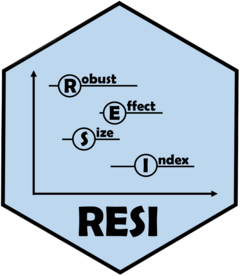

Insurance Plasmode Simulation for RESI Evaluation
Source:R/simulations.R
insurancePlasmodeSim.RdRuns a plasmode simulation study using the insurance dataset to
evaluate RESI confidence interval performance. In each replicate, n
observations are resampled with replacement from the full insurance dataset
(N = 1338). The RESI point estimates from resi_pe applied
to the full dataset are treated as the true parameter values for computing bias,
MSE, CI coverage, and CI width.
Arguments
- nsim
Integer, number of simulation replicates per (setting,
n) cell. Default 1000. Use 10 for initial testing.- n.vec
Integer vector of sample sizes. Default
c(50, 100, 200, 500, 1000, 2000, 5000).- nboot
Integer, bootstrap replicates per internal
resicall. Default 500. Use 10 for initial testing. Ignored whenci.method != "boot".- alpha
Numeric, CI significance level. Default 0.05.
- ci.method
Character, CI method passed to
resi. One of"boot"(bootstrap, default),"normal"(asymptotic truncated-normal), or"qf"(asymptotic quadratic-form / Imhof). Whenci.method != "boot",nbootis ignored.- output.dir
Character, path to the directory where all results are saved. Created if it does not exist. Defaults to
"resiBootSim","resiAsympNormalSim", or"resiAsympQFSim"based onci.methodwhenNULL.- fixed.knots
Logical. If
TRUE, spline knots are fixed at the empirical tertiles ofagein the full insurance dataset rather than re-selected bydf = 3in each bootstrap sample. DefaultFALSE.- mc.cores.settings
Integer, cores for the outer
mclapplyover (setting \(\times\) sample size) combinations. Default 1.- mc.cores.reps
Integer, cores for the inner
mclapplyover simulation replicates within each (setting,n) cell. Default 1.
Value
Invisibly returns the summary metrics data.frame. Side effects:
output.dir/sim_raw/<setting>_n<n>.rds: list of per-replicateanovaandcoefficientstables.output.dir/summary_table.rds: combined metrics table with columnsmodel, vcov, n, n_success, table, term, bias, mse, coverage, width.
Details
Two models are evaluated:
lm:
log10(charges) ~ ns(age, df=3) * sex + bmi + smoker + regionglm:
I(charges > 10000) ~ ns(age, df=3) * sex + bmi + smoker + regionwithfamily = binomial()
Each model is evaluated under both parametric (vcovfunc = stats::vcov) and
robust (vcovfunc = sandwich::vcovHC) variance settings, yielding four
simulation conditions.
Parallelization is via mclapply, which uses forking and is
not supported on Windows (falls back to sequential evaluation on Windows).